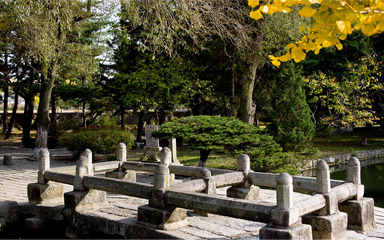
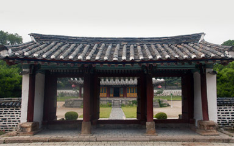
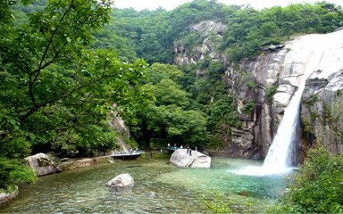
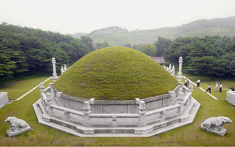
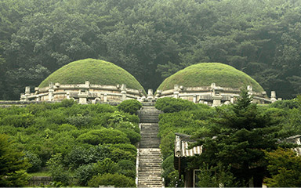
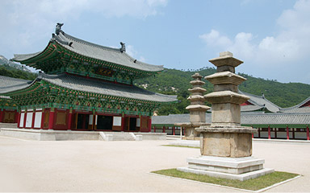
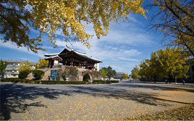

고려의 충신 정몽주의 흔적을 찾을 수 있는 선죽교
고려청자와 금속활자 등 고려시대의 대표적인 유물이 있는 고려 박물관
금강산의 구룡폭포, 설악산의 대승폭포와 함께 조선의 3대 폭포이며 송도삼절의 하나인 박연폭포
자~그럼 개성으로 가는 타임머신을 타볼까요?
주요관광지
선죽교
고려박물관
박연폭포
왕건왕릉
공민왕릉
영통사
개성남대문

선죽교
선죽교는 자그마한 돌다리로 고려 충신 정몽주가 이방원에 의해 피습당한 곳인데 애초에 선지교(善地橋)라 불리던 것은 정몽주가 흘린 핏자국이 없어지지 않고 참대가 자라났다고 하여 선죽교라고 고쳐 부르게 되었습니다.

고려박물관
고려박물관은 고려시대 최고 교육기관인 국자감의 후신인 성균관 건물로서 고려시대 건물은 임진란때 소실대고 현재 건물은 17세기 초에 건축되었습니다. 고려박물관은 건물내부를 전시공간으로 활용하여 4개의 전시관으로 고려청자, 금속활자 등 약 1,000여점의 고려유물을 전시하고 있습니다. 야외 전시장에는 헌화사 7층탑, 흥국사 석탑 등 북측의 국보급 문화재가 전시되어있습니다.

박연폭포
박연폭포는 송도삼절의 하나로 금강산 구룡폭포, 설악산 대승포고와 함께 조선3대포고로 손꼽힌다. 박연폭포는 높이 37m, 너비 1.5m로 천마산과 성거산 사이의 험준한 골짜기로 흘러 내리며, 깎아지른 듯한 벼랑과 사방으로 병풍처럼 둘러선 층암절벽에 안기어 절경을 이룹니다. 폭포위쪽은 바가지 모양으로 패인 박연이라는 연못이 있고, 밑으로는 둘레 120m의 고모담이 있습니다.

왕건왕릉
고려의 시조, 왕건의 무덤인 왕건왕릉은 개성남대문에서 북쪽으로 6km 떨어진 해선리에 자리잡고 있습니다. 1994년 개건하며 세운 ‘고려태조왕건왕릉개건비’가 능앞에 있으며 무덤안을 직접 관람할 수 있게 되어 있는 점과 공원이 조성되어 있는 점이 특징입니다.

공민왕릉
고려 31대왕인 공민왕의 무덤으로 개성 중심부에서 서쪽으로 14km 떨어져 위치해 있습니다. 이 무덤은 쌍분으로 왼편이 공민왕의 현릉이고 오른편은 왕비인 노국공주의 정릉으로 풍수지리상 명당에 위치한 고려시대 대표적 능묘입니다.

영통사
개성 시내에서 북쪽으로 송도저수지를 지나면 박달산 기슭 영통골에 천태종의 시조인 대각국사 의천에 의해 창건된 영통사가 위치하고 있습니다. 영통사는 고려시대의 대표적인 사찰로 여러 차례 전란으로 폐사되었다가 최근 남과 북이 합심하여 복원하였습니다. 경내에는 북측의 문화재로 진정된 대각국사비, 당간지주, 삼층석탑, 오층석탑이 자리하고 있습니다.

개성남대문
개성남대문은 개성 내성의 정남문으로 고려말부터 조선초에 걸쳐 완성되었으나, 6.25때 파괴된 것을 1954년에 복원하였습니다. 남대문은 고려시대의 건축술을 이어받아 장식이 소박하면서도 짜임새가 있는 문루로 평가되며 남대문 안에는 연복사에서 옮겨온 무게 14톤의 거대한 연복사종이 걸려있습니다.
먹을거리
자남산여관
남대문 인근에 위치한 한옥 형식의 3층 건물인 통일관은 500명 이상을 수용할 수 있는 대형 식당이며 개성 지역의 특산 요리를 즐길 수 있습니다.
놋그릇에 담겨 나오는 13첩 반상이 유명한 곳입니다.
물김치, 도토리묵, 오이 소박이 등 익숙한 반찬이지만 맛이 한국과는 조금씩 다르니 이를 느껴보면서 식사를 하는 것도 즐거움이 됩니다.